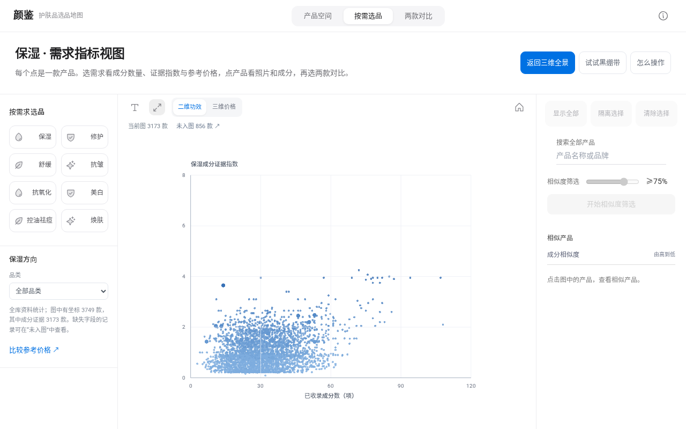
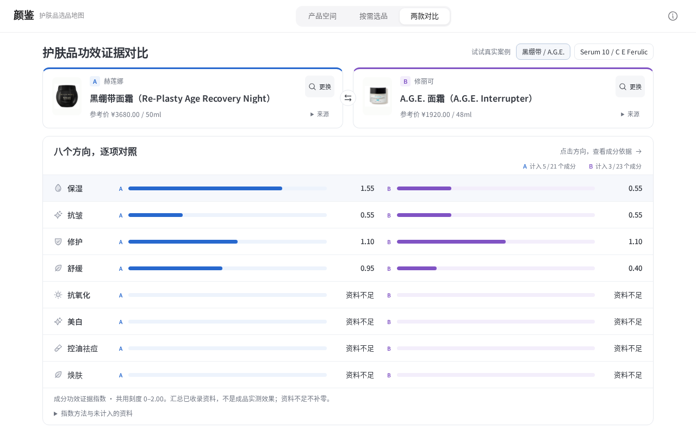

在ModelScope阅读 ↗面霜翻了几十款，还是不知道怎么选：我们把护肤品做成了一张地图
颜鉴 · 见微知颜｜欧莱雅美妆科技黑客松「信任守护师」
你只是想买一瓶保湿面霜。
打开购物网站，商品一屏接着一屏。保湿、修护、抗老，各种卖点扑面而来。你打开几款、收藏几款，再返回列表继续往下翻。
看过的产品越来越多，几个问题却始终没有答案：它们到底有什么不同？多花的钱买到了什么？那些动人的宣传，依据在哪里？

同批真实商品制作的列表式浏览示意，呈现逐款查看、记住信息、返回继续寻找的过程。
为什么护肤品也需要一张参数地图？
买手机，我们会比较芯片、电池和摄像头；买汽车，我们会比较续航、动力和空间。这些参数把差异放在同一张表里，消费者可以按自己的需要选择。
护肤品同样有可以核对的信息：成分表列了什么，规格是多少，参考价格来自哪里，某个功效方向有哪些成分和研究资料。它们分散在商品详情、成分解释和研究原文中，消费者需要来回查找。
如果把这些信息组织在同一张地图上，先看到选择范围，再逐步缩小候选，会是什么样？
我们把这个想法做成了颜鉴｜护肤品选品地图：从公开收录的成分表出发，把产品编码为空间中的点，再把需求、参考价格与可追溯的成分证据连接起来。
打开颜鉴，在线体验
一、先看见产品之间的关系

每个点对应一个真实产品 ID。拖动旋转，观察不同方向上的分布。
打开颜鉴，点云从中心展开，一批产品同时出现在三维空间中。你可以先看看整体，也可以搜索一款熟悉的产品作为起点。
产品的成分表经语义编码得到高维向量，再通过降维展示在屏幕上。成分描述接近的产品，可以放在相近的区域探索。用户从“继续翻下一页”，转向“看看这款产品周围还有什么”。
点击一个点，产品照片、品牌、完整名称、已收录介绍和成分会出现在资料卡里。周围产品按显示距离逐渐变淡，当前关注的对象更清楚，视角保持原位。

点选先看资料，按“开始相似度筛选”再进入局部范围。
想进一步找相似产品时，再按“开始相似度筛选”。默认阈值为75%，右侧列表与图中的范围同步更新；调整阈值后，按“应用筛选”生效。这样，查看产品和筛选候选成为两次清楚的操作。
筛选使用原始成分向量的余弦相似度。局部球形视图把这一距离映射为半径，保留周围的产品背景；它让用户直观看见一次筛选圈出了哪些候选。
二、从“我要保湿”进入具体比较

二维图把已收录成分数量与保湿方向的成分证据放在共同坐标上。
选择“保湿”，地图转到二维功效平面。横轴是已收录成分数，纵轴是保湿方向的成分功效证据指数。选择修护、舒缓或抗皱时，同一批产品会先展开回三维点云，再落到目标需求图中。
这个切换过程把“同一批产品，从不同需要去看”呈现出来。产品身份保持一致，变化的是当前要比较的证据方向。
八个方向共用固定刻度。点击产品，可以继续查看该方向的贡献成分；再点开成分，就能看到研究类别、来源与计算依据。
价格放在另一个可选择的维度里：按“三维价格”，就能旋转查看成分数、所选方向证据指数与人民币整件参考价。缺少价格或方向资料的记录保留在“未入图”列表，支持搜索和查看产品。
需要按实际预算选品时，还可以进入“比较参考价格”。那里将元/g与元/ml分组，提供整件预算、品牌和品类筛选。产品的规格、来源与记录日期跟随每一条参考价展示。
三、收敛到两款，把差异摊开

蓝色A、紫色B使用相同刻度，方向、数值和贡献成分可以逐项查看。
地图帮助用户形成候选，对比页让选择进一步具体。
两款产品并排显示品牌、名称、规格和参考价格。保湿、抗皱、修护、舒缓、抗氧化、美白、控油祛痘与焕肤八个方向，用共同刻度展示已收录的成分证据贡献。
点击任一方向，就能看到两边分别由哪些成分参与计算、采用了哪些证据权重。继续点成分，原始来源和研究场景会在抽屉里展开。
成分表则按共有、仅A列出、仅B列出对齐。你可以只看差异，也可以展开完整表。比较到这里，用户能说清楚自己在比较哪两款、差异在哪里，以及判断依据来自什么资料。
四、地图背后的计算
成分语义空间使用 Qwen3-Embedding-8B 的4096维向量。Faiss在原始向量中检索相似产品，UMAP与PCA的固定投影负责交互展示。降维后的远近用于探索，列表中的相似度来自原始向量计算。
成分功效证据指数使用独立的方法：同一成分、同一功效方向有多条记录时，取最高合格证据权重；再将各成分贡献汇总到产品。每一份贡献都能追到对应的成分、断言与证据记录，资料缺失和真实零值分别处理。
后端采用FastAPI与SQLAlchemy，前端使用React和Three.js。产品、证据、检索索引与固定坐标来自一致的数据快照，主地图与对比流程使用确定性计算，运行在ModelScope的CPU创空间中。
现有的SkinSort产品对比已经展示了成分并排比较的价值；Google Embedding Projector展示了高维表示的交互探索方式。颜鉴把类别全景、按需观察、相似筛选、两款比较和证据追溯连成一次选品旅程。
资料口径
当前版本收录4,029条产品记录，3,749条有地图使用的真实成分向量。二维功效图按当前方向的资料情况绘制；三维价格图进一步要求具有参考价格。页面分别呈现入图数量与未入图记录，样本分布反映当前收录范围。
成分功效证据指数汇总已收录的成分资料，受证据覆盖影响。成品效果还涉及浓度、配方、使用方式和个体情况。参考价格保留具体版本、规格、来源与记录日期，浓度估计保留“估计”标记。
把选品依据看清楚
颜鉴希望让一次选品从“我又翻了很多款”，走向“我知道自己在比较什么，也找得到依据”。
先看产品之间的关系，再带着自己的需求收敛候选，最后把两款放到同一尺度上比较。选择仍由消费者做，地图把选择需要的信息摆出来。
立即体验：颜鉴｜护肤品选品地图
— 见微知颜